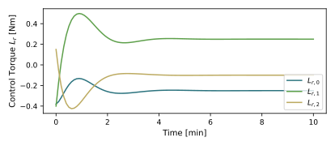
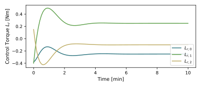
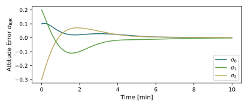
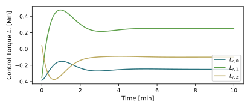
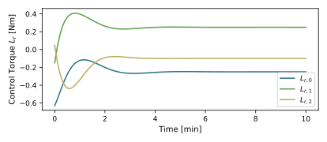

scenarioAttitudeFeedback
Overview
Demonstrates how to stabilize the tumble of a spacecraft orbiting the Earth that is initially tumbling. This script sets up a 6-DOF spacecraft which is orbiting the Earth.
The script is found in the folder basilisk/examples and executed by using:
python3 scenarioAttitudeFeedback.py
The simulation layout is shown in the following illustration. A single simulation process is created which contains both the spacecraft simulation modules, as well as the Flight Software (FSW) algorithm modules.

The dynamics simulation is setup using a Module: spacecraft module to which a gravity effector is attached. Note that both the rotational and translational degrees of freedom of the spacecraft hub are turned on here to get a 6-DOF simulation. For more information on how to setup orbit, see scenarioBasicOrbit.
The control torque is simulated using the Module: extForceTorque module. This module can accept a torque in body frame components either through an input message, or through a module internal torque vector which can be set in python. In this simulation, the flight software is providing the attitude control torque message which is connected to the torque input message of this module. If an external torque is being simulated, then the module internal torque vector is set to a constant value.
The flight software algorithm module require a navigation message with the spacecraft orientation and attitude rates. This is setup using the Module: simpleNav module. By just invoking a sensor module it is setup to run without any simulated corruptions. Thus in this simulation it will return truth measurements.
Next the flight software algorithms need to be setup. The inertial pointing reference frame definition is provided through the simple Module: inertial3D module. The only input it requires is the desired inertial heading.
The reference frame states and the navigation message (output of Module: simpleNav are fed into the Module: attTrackingError module. It is setup to compute the attitude tracking error between the body frame \(\cal B\) and the reference frame \(\cal R\). If a body fixed frame other than \(\cal B\) needs to be driven towards R, this could be configured as well in this module.
Finally the tracking errors are fed to the classic MRP feedback control module. The algorithm of this is discussed in the text book Analytical Mechanics of Space Systems. The control torque output vector message of this module is connected back to the input message of the Module: extForceTorque module to close the control loop.
While the nominal simulation has set useCMsg flag to False, with it set to True it illustrates two things.
First it shows how to create a C-wrapped C-message in Python and write to it. This is done with the
VehicleConfigMsg message. Second, it illustrates how instead of writing to a module internal
output message (see mrpControl.cmdTorqueOutMsg) we can re-direct the module to write to a
stand-alone message cmdTorqueMsg instead. This is useful if we need to have multiple module be writing
to a single output message such as if several flight software stacks are being setup.
When the simulation completes 3 plots are shown for the MRP attitude history, the rate tracking errors, as well as the control torque vector.
Illustration of Simulation Results
show_plots = True, useUnmodeledTorque = False, useIntGain = False, useKnownTorque = False, useCMsg = False
show_plots = True, useUnmodeledTorque = True, useIntGain = False, useKnownTorque = False, useCMsg = False
Note that, as expected, the orientation error doesn’t settle to zero, but rather converges to a non-zero offset proportional to the un-modeled torque being simulated. Also, the control torques settle on non-zero steady-state values.
 

show_plots = True, useUnmodeledTorque = True, useIntGain = True, useKnownTorque = False, useCMsg = False
In this case the orientation error does settle to zero. The integral term changes the control torque to settle on a value that matches the un-modeled external torque.
 show_plots = True, useUnmodeledTorque = True, useIntGain = False, useKnownTorque = True, useCMsg = False
In this case the orientation error does settle to zero as the feed-forward term compensates for the external torque. The control torque is now caused to settle on a value that matches the un-modeled external torque.
- scenarioAttitudeFeedback.run(show_plots, useUnmodeledTorque, useIntGain, useKnownTorque, useCMsg)[source]
The scenarios can be run with the followings setups parameters:
- Parameters:
show_plots (bool) – Determines if the script should display plots
useUnmodeledTorque (bool) – Specify if an external torque should be included
useIntGain (bool) – Specify if the feedback control uses an integral feedback term
useKnownTorque (bool) – Specify if the external torque is feed forward in the control
useCMsg (bool) – Specify if the C-based stand-alone messages should be used